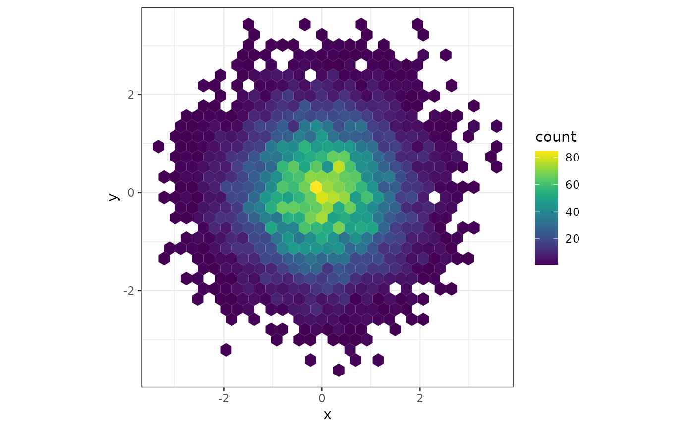
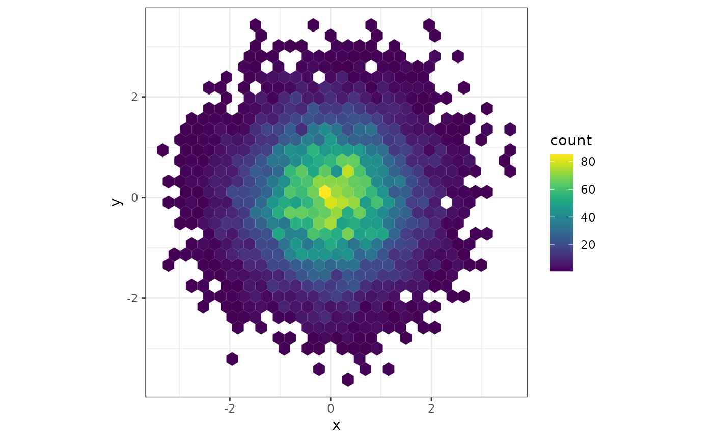

Scale functions (fill and colour/color) for
ggplot2.
For discrete == FALSE (the default) all other arguments are as to
scale_fill_gradientn or
scale_color_gradientn. Otherwise the function will
return a discrete_scale with the plot-computed number
of colors.
See viridis and
viridis.map for more information on the color
palettes.
Usage
scale_fill_viridis(
...,
alpha = 1,
begin = 0,
end = 1,
direction = 1,
discrete = FALSE,
option = "D",
aesthetics = "fill"
)
scale_color_viridis(
...,
alpha = 1,
begin = 0,
end = 1,
direction = 1,
discrete = FALSE,
option = "D",
aesthetics = "color"
)
scale_colour_viridis(
...,
alpha = 1,
begin = 0,
end = 1,
direction = 1,
discrete = FALSE,
option = "D",
aesthetics = "color"
)Arguments
- ...
Parameters to
discrete_scaleifdiscrete == TRUE, orscale_fill_gradientn/scale_color_gradientnifdiscrete == FALSE.- alpha
The alpha transparency, a number in [0,1], see argument alpha in
hsv.- begin
The (corrected) hue in [0,1] at which the color map begins.
- end
The (corrected) hue in [0,1] at which the color map ends.
- direction
Sets the order of colors in the scale. If 1, the default, colors are as output by
viridis_pal. If -1, the order of colors is reversed.- discrete
Generate a discrete palette? (default:
FALSE- generate continuous palette).- option
A character string indicating the color map option to use. Eight options are available:
"magma" (or "A")
"inferno" (or "B")
"plasma" (or "C")
"viridis" (or "D")
"cividis" (or "E")
"rocket" (or "F")
"mako" (or "G")
"turbo" (or "H")
- aesthetics
Character string or vector of character strings listing the name(s) of the aesthetic(s) that this scale works with. This can be useful, for example, to apply colour settings to the colour and fill aesthetics at the same time, via aesthetics = c("colour", "fill").
Author
Noam Ross noam.ross@gmail.com / @noamross
Bob Rudis bob@rud.is / @hrbrmstr
Simon Garnier: garnier@njit.edu / @sjmgarnier
Examples
library(ggplot2)
# Ripped from the pages of ggplot2
p <- ggplot(mtcars, aes(wt, mpg))
p + geom_point(size = 4, aes(colour = factor(cyl))) +
scale_color_viridis(discrete = TRUE) +
theme_bw()
# Ripped from the pages of ggplot2
dsub <- subset(diamonds, x > 5 & x < 6 & y > 5 & y < 6)
dsub$diff <- with(dsub, sqrt(abs(x - y)) * sign(x - y))
d <- ggplot(dsub, aes(x, y, colour = diff)) + geom_point()
d + scale_color_viridis() + theme_bw()
 # From the main viridis example
dat <- data.frame(x = rnorm(10000), y = rnorm(10000))
ggplot(dat, aes(x = x, y = y)) +
geom_hex() + coord_fixed() +
scale_fill_viridis() + theme_bw()

library(ggplot2)
library(MASS)
library(gridExtra)
data("geyser", package="MASS")
ggplot(geyser, aes(x = duration, y = waiting)) +
xlim(0.5, 6) + ylim(40, 110) +
stat_density2d(aes(fill = ..level..), geom = "polygon") +
theme_bw() +
theme(panel.grid = element_blank()) -> gg
grid.arrange(
gg + scale_fill_viridis(option = "A") + labs(x = "Viridis A", y = NULL),
gg + scale_fill_viridis(option = "B") + labs(x = "Viridis B", y = NULL),
gg + scale_fill_viridis(option = "C") + labs(x = "Viridis C", y = NULL),
gg + scale_fill_viridis(option = "D") + labs(x = "Viridis D", y = NULL),
gg + scale_fill_viridis(option = "E") + labs(x = "Viridis E", y = NULL),
gg + scale_fill_viridis(option = "F") + labs(x = "Viridis F", y = NULL),
gg + scale_fill_viridis(option = "G") + labs(x = "Viridis G", y = NULL),
gg + scale_fill_viridis(option = "H") + labs(x = "Viridis H", y = NULL),
ncol = 4, nrow = 2
)
#> Warning: The dot-dot notation (`..level..`) was deprecated in ggplot2 3.4.0.
#> ℹ Please use `after_stat(level)` instead.
# From the main viridis example
dat <- data.frame(x = rnorm(10000), y = rnorm(10000))
ggplot(dat, aes(x = x, y = y)) +
geom_hex() + coord_fixed() +
scale_fill_viridis() + theme_bw()

library(ggplot2)
library(MASS)
library(gridExtra)
data("geyser", package="MASS")
ggplot(geyser, aes(x = duration, y = waiting)) +
xlim(0.5, 6) + ylim(40, 110) +
stat_density2d(aes(fill = ..level..), geom = "polygon") +
theme_bw() +
theme(panel.grid = element_blank()) -> gg
grid.arrange(
gg + scale_fill_viridis(option = "A") + labs(x = "Viridis A", y = NULL),
gg + scale_fill_viridis(option = "B") + labs(x = "Viridis B", y = NULL),
gg + scale_fill_viridis(option = "C") + labs(x = "Viridis C", y = NULL),
gg + scale_fill_viridis(option = "D") + labs(x = "Viridis D", y = NULL),
gg + scale_fill_viridis(option = "E") + labs(x = "Viridis E", y = NULL),
gg + scale_fill_viridis(option = "F") + labs(x = "Viridis F", y = NULL),
gg + scale_fill_viridis(option = "G") + labs(x = "Viridis G", y = NULL),
gg + scale_fill_viridis(option = "H") + labs(x = "Viridis H", y = NULL),
ncol = 4, nrow = 2
)
#> Warning: The dot-dot notation (`..level..`) was deprecated in ggplot2 3.4.0.
#> ℹ Please use `after_stat(level)` instead.